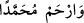

Muhammed Kürdi ise “Bu rivâyet sâbit değildir. Sâbit olduğu farz ve takdir edilse bile
bu kelime “
” harf-i cerri olmayıp onunla kastedilen Ali b. Ebî Tâlib’dir. Yâni “Kim
başkalarını değil de Ali’yi âilesinden saymak sûretiyle benimle âilem arasını Ali b. Ebî
Tâlib ile ayırırsa…” demektir. Burada Şîa’ya bir târiz/dokundurma vardır. Çünkü Hz.
Ali’yi çok aşırı sevdikleri için onunla Hz. Peygamber (s.a.)’in âilesini ayıranlar
onlardır. Bu yüzden Hz. Peygamber (a.s.) Ali (r.a.)’a: “Senin hakkında iki grup insan
helak olmuştur: Seni aşırı seven ve sana aşırı buğzeden.”[282] Hz. Ali’yi aşırı sevenler
Râfizîler, ona buğzedenler ise Hâricîler’dir. Biz Ehl-i sünnet ise bu iki grubun arasında
(mutedil ve orta) bir yoldayız.” Muhammed Kürdi’nin sözü burada bitmiştir.
Salevâtta “
(Muhammed’e rahmet eyle) denilmez. Çünkü bu söz O’nda bir
eksiklik bulunduğunu vehmettirir. Çünkü rahmet, ayıplanıp azarlanan bir şey sebebiyle
olur. En doğru olan budur. Nitekim Şerefüddîn et-Tıybî, Şerhu’l-Mişkât’ta böyle
zikretmiştir. ed-Dürer’de: “Sahih olan böyle söylemenin mekruh olmadığıdır.” der.
Şeyh Ali Es’iletü’l-hikem’de şöyle demiştir: “Hz. Peygamber (s.a.)’e ve âilesine
sadaka haram kılınmıştır. Çünkü sadaka, sadakayı veren kişinin verdiği kişiye merhamet
etmesinden kaynaklanır. Allah Teâlâ Nebîsi (s.a.)’e kendisinden başkasının merhamet
etmesini istememiştir. Bu sebeple Sadru’ş-şerîa’nın zikrettiği gibi bazı fakihler, bu
konuda bazı rivâyetler vârid olsa da O yüce Hazret’e karşı bir edeb nişanesi olarak
salevâtta rahmet dilemeyi yasaklamışlardır.
Rasûlullah (s.a.)’in pâk ruhuna Fâtiha okumak da bu konuyla ilgilidir. İmam Şâfiî ve
arkadaşları Peygamberimizin (a.s.) rûhuna ve diğer peygamberlerin ruhlarına Fâtiha
okunmasını men etmişlerdir. Çünkü âsîlerin ruhlarına Fâtiha okumak âdet olarak
süregelmiştir. Öyleyse rahmet dileyerek duâ etmekte küçük görme bulunduğu halde
böyle duâ edildiği zaman peygamberlerin ruhlarıyla âsîlerin ruhlarını eşit tutulmuş olur.
Ebû Hanîfe ve arkadaşları peygamberlerin ruhlarına Fâtiha okunmasını câiz
görmüşlerdir. Çünkü Hz. Peygamber (s.a.) bazı peygamberlere Allah’tan rahmet
dileyerek duâ etmiştir. Nitekim O: “Allah, kardeşim Mûsâ’ya rahmet etsin, Allah
kardeşim Lût’a rahmet etsin.”[283] diye duâ etmiştir. Yine namazda iki secde arasında:
“Allâh’ım beni bağışla ve bana rahmet eyle.”[284] diye duâ etmiştir. Allah selâmı
öğretmek için: “
(Ey peygamber, Allâh’ın selamı,
rahmeti ve bereketleri senin üzerine olsun)”[285] buyurmuştur. Hiç kimse Allâh’ın
rahmetinden müstağnî değildir.
Yine Kur’an okumanın ve benzerlerinin faydası bize geri döner. Nitekim Şeyh-i
Ekber (k.s.) şöyle demiştir: “Namazda ve diğer hallerde Hz. Peygamber (s.a.)’e salevât
getirmek, salevât getiren kimsenin Hz. Muhammed (s.a.)’e gıyabında duâ etmesidir.
Sahih hadîste vârid olmuştur ki: “Kim kardeşine gıyabında duâ ederse bir melek onun
için: “Sana da bir misli verilsin” diye duâ eder.”[286] Bir rivâyette ise melek “sana iki
misli verilsin” diye duâ eder. İşte bu sebeple bu hayrın melekten namaz kılan kimseye